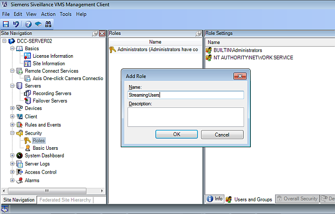
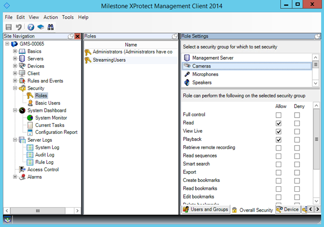

Configuring VideoStreaming Users
In order to display live or recorded video on Desigo CC stations, you must configure video streaming permissions as described here.
NOTE: This task is performed within step 3: Set up User Accounts and Networking of the main video integration workflow.
Prerequisites
- The VMS server is installed.
- The Video extension is installed.
1 - Create the StreamingUsers Role
- Start the VMS Management Client.
- In the Site Navigation tree, select Security > Roles.
- Right-click inside the Roles pane and select Add Role.
- In the Add Role dialog box, enter StreamingUsers in the Name field.
- Click OK.
- The new StreamingUsers role appears in the Roles pane.

2 – Set the StreamingUsers Role Permissions
- The VMS Management Client tool is running.
- In the Site Navigation tree, select Security > Roles.
- In the Roles pane, select StreamingUsers.
- In the Role Settings pane, select the Overall Security tab.
- Select the Cameras security group.
- Check the following Allow options:
- Read
- View Live
- Playback
- Click the Save icon on the top left of the VMS Management Client window.

3 – Associate All Desigo CC Windows Users to the StreamingUsers Role in VMS
In order to get VMS streaming video in Desigo CC, the Windows user who launches the Desigo CC client must be assigned to the StreamingUsers role. Therefore, in the VMS, associate all Desigo CC Windows users to the StreamingUsers role as described here.
- For each Desigo CC user, on the VMS server computer create an identical Windows account (same UserId and password) to the one that user has on the Desigo CC station.
NOTE: In a Windows domain, the associated users are automatically distributed on the clients. However, in a Windows workgroup you will need to replicate and then maintain the accounts manually on all GMS and VMS stations (including web-based clients). - In the VMS Management Client tool:
- In the Site Navigation tree select Security > Roles.
- In the Roles pane, select StreamingUsers.
- In the Role Settings pane, at the bottom, select the Users and Groups tab.
- Click Add... Windows user.
- Browser for and select the Widows accounts created in step 1 above.
- Click OK.
- The Windows users are assigned to the StreamingUsers role. This will enable these users to see streaming video from their Desigo CC clients.